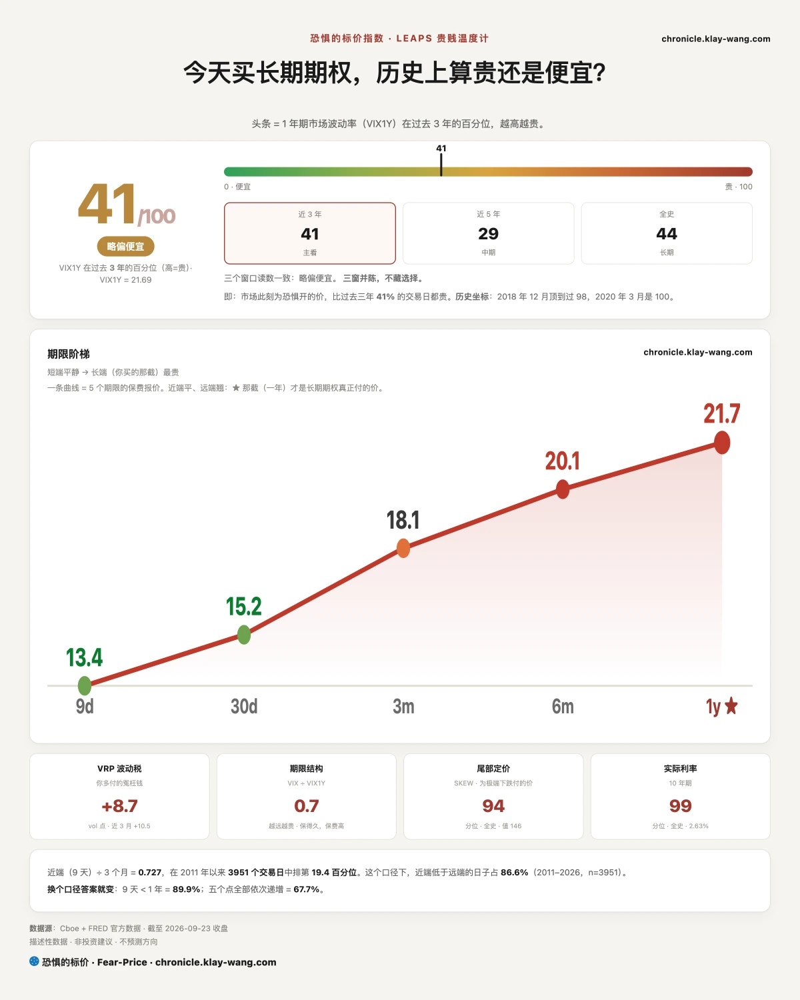
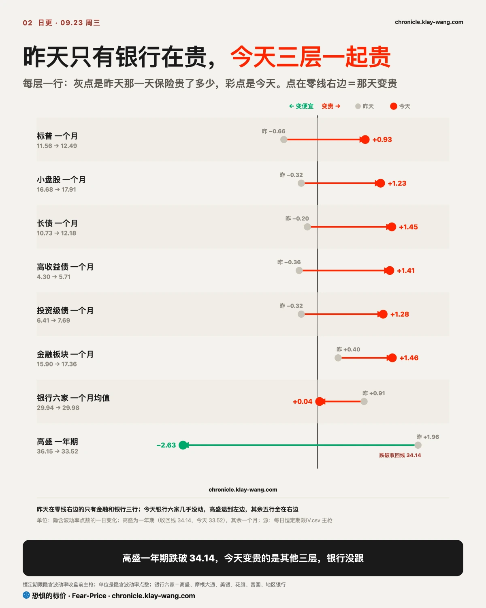
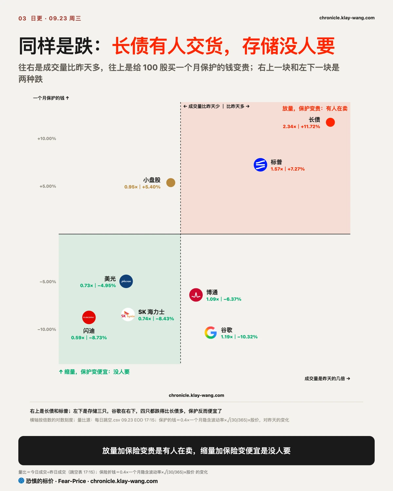
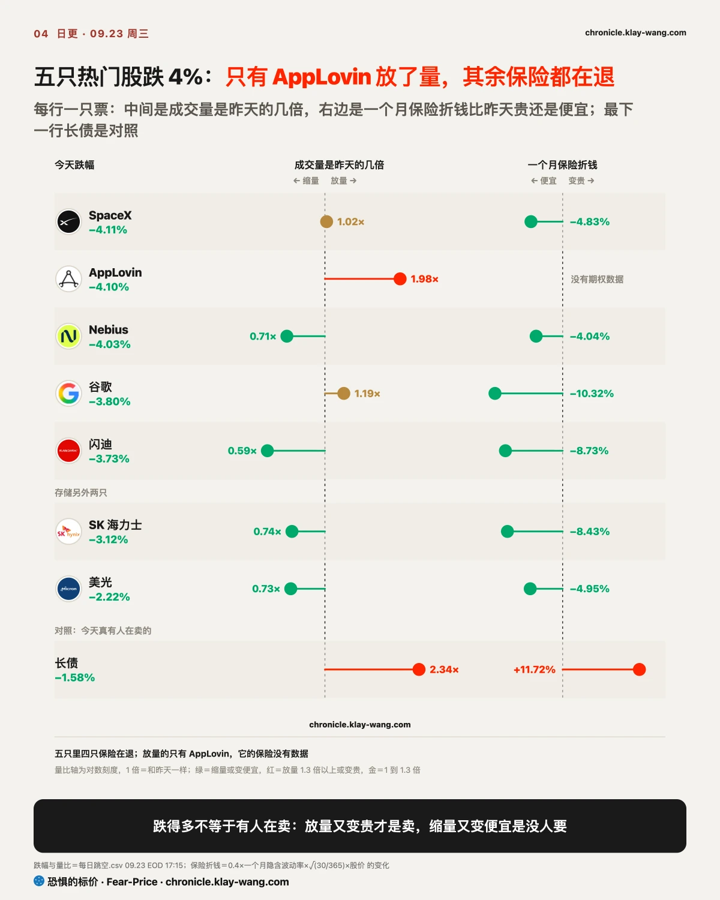
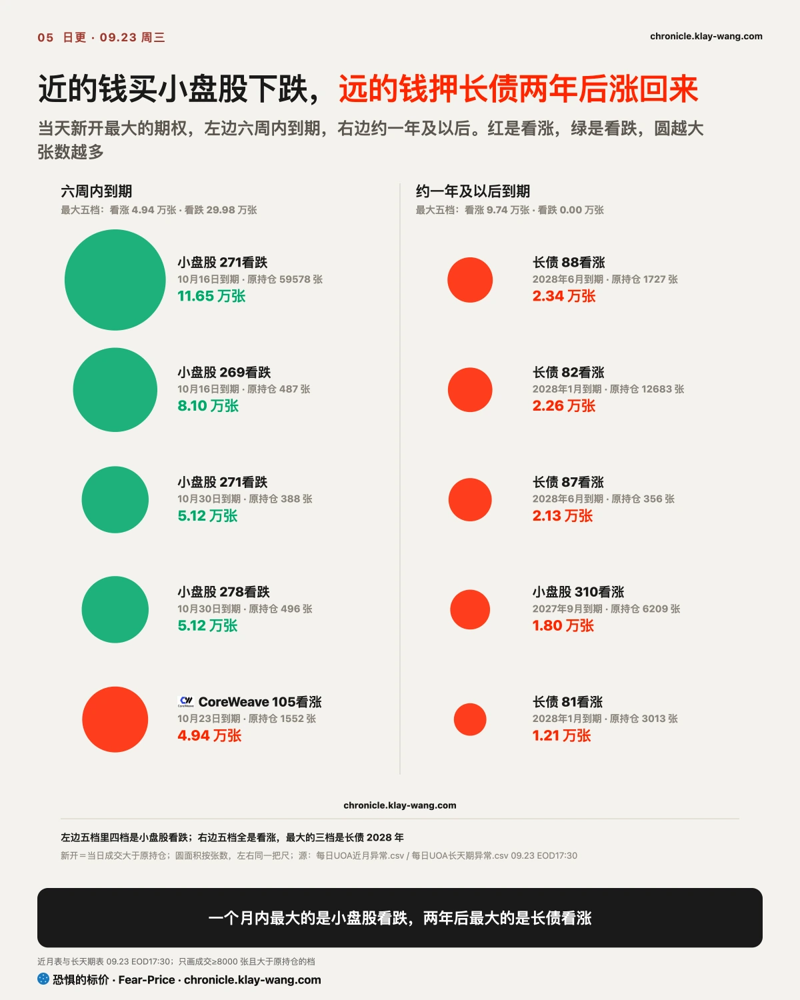

恐惧的标价指数（Fear-Price Index）· 2026-09-23 · 读数 40.9/100：一年期波动率 VIX1Y 为 21.69，处于近三年第 40.9 百分位，高即贵。逐日台账与口径 → chronicle.klay-wang.com · 转载注明：恐惧的标价指数 · Fear-Price
昨天 39.0，今天 40.9，一年期保险只贵了一点。贵在近端：九天期的波动率从 12.13 涨到 13.45，一个月的 VIX 从 14.21 涨到 15.18，一年期只从 21.59 动到 21.69。这和期权里看到的对得上，钱在买接下来几周的保护，对一年后的风险没怎么加价。
VIX 15.18，CNN 恐贪 34.7，两个相除的 K 指数 2.285，昨天是 2.481：嘴上说担心的人和昨天差不多，真掏钱买保护的人多了一点，K 要跌破 1，得 VIX 涨过 35。历史在 chronicle.klay-wang.com/kindex，指数自己在 chronicle.klay-wang.com/fear-price。
还有一个读数值得放在今天看：十年期真实利率的最新一期是 2.63%，放在有数据以来的全部历史里排第 98.9 百分位。扣掉通胀以后借钱的价钱，已经站在历史上最贵的那一档，〔利率〕那一节讲的事，底色在这里。想给组合配一年期保护的，今天比昨天贵了一点，贵得不多，涨价主要在一个月以内。

上午的 PMI 全线超预期。PMI 是采购经理人指数，每月去问企业的采购经理，这个月的订单、产量、用工、进货价比上个月多还是少，高于 50 算扩张。它是每个月最早出来的一份数据，比 GDP 和物价数据早好几周，美联储拿它判断经济热不热、物价会不会再起来。今天的综合读数是 2021 年 7 月以来最高，用工扩张是四年多来最快。最刺眼的是投入价格，冲到 2022 年 10 月以来最高，它是企业进货的成本，往往几个月后传到货架上。
从这份数据走到黄金，中间要过三道。
第一道，数据热，美联储就有了继续加息的理由。芝商所 FedWatch 显示，10 月底加息的概率一个月前还不到一成，今天到了三分之二。
第二道，加息预期抬的是真实利率。把十年期今天涨的约 15 个基点拆开看，通胀保值债券的收益率涨了约 12.5 个，通胀预期只动了约 2 个。市场没在担心通胀失控，它在赌美联储会把利率抬得更高、放得更久；扣掉通胀以后借钱真正要付的价钱，就是真实利率：存款利率 5%、物价涨 3%，你手里的钱实际只多了 2%，这 2% 才是真的。
第三道，才轮到黄金。黄金不生利息，同样一笔钱放在国债里，扣掉通胀后能拿的利息变多了，拿着黄金放弃的就更多；美元跟着走强，用美元标价的黄金对外国买家也更贵，金价又被压了一把。所以今天物价指标这么热，黄金反而跌了，白银、金矿股、比特币也跟着跌。
下午的五年期拍卖又加了一把火。中标利率比拍卖前的市场高了约 3 个基点，兜底的交易商分到 2024 年以来最多，别的买家接得少。财政部同一天宣布周四回购最多 60 亿美元长债，长端收益率反而更高，看样子市场嫌它太少。十年期收在 5.11%，2007 年以来最高。
放到普通人身上，真实利率上去有人吃亏、有人占便宜。借钱的人吃亏：三十年房贷利率已经升至 7% 以上，车贷、信用卡这类跟着利率走的借款往往也会变贵，买房买车的月供跟着涨。存钱的人反而占便宜：存款、货币基金、短期国债的利息扣掉通胀后变多了，钱放着不动也在变值钱。所以同一条新闻，对刚要贷款买房的人是坏消息，对手里有闲钱的人是好消息。
企业也一样，靠借钱、靠几年后回本的计划，今天都得按更高的利率重算一遍。麦当劳收跌近 5%，直接原因是美国客流不及预期，但它同一天在投资者日上说要先拿出 85 亿美元补贴加盟商，回报要几年后才到。远处的钱折回今天，要除以更大的利率，先花钱后收钱的计划在这种日子更不讨好。

保险一起变贵，源头在利率。债市的波动率指数一天从 79 跳到 95，涨了两成多，这个指数是市场给未来一个月国债价格颠簸开的保险价，它跳，说明大家在花更多钱防利率再乱跳。长债一个月保险折钱比昨天贵了约 12%，标普贵了约 7%，高收益债和投资级债基金的保险贵得更多。
但往下拆，有两处没跟。债券基金的保险贵，是因为它们手里的债跟着国债利率一起晃；拆到发债的公司身上，Meta、甲骨文、亚马逊、谷歌这些科技大厂的公司债，收益率跟着国债一起涨，比国债多要的那一截利息基本没动，只有 CoreWeave 多要了三十来个基点。这一截叫利差，是债市给一家公司还不还得上钱的标价，它不动，说明涨的只是利率，市场没在担心这些公司的偿债能力。银行这边，摩根大通、高盛这几家大银行的一个月保险平均几乎没动，高盛一年期还退了。冲击停在利率上，标普今天只跌不到 1%，和这一点对得上。
上周我说，加息这件事股票按一次算、债市按三四次算，中间那道缝落在银行，收回线是高盛一年期 34.14。今天它退到 33.52，这条收回：股票和债券的保险贵上来，银行的保险没动，那道缝从两头合上了。
接下来要盯的是这次冲击往哪传。哪天这些科技大厂的利差跟着扩、银行保险跟着贵，利率的事就变成信用的事，那时候标普不会只跌这么一点。

同样是跌，长债和存储是两回事，分辨它们只要看两样东西：成交量，和保险的价钱。
每一笔成交都有一个买家一个卖家，价格往哪边走，看哪一边更急。长债今天往下走，量是昨天的两倍多，说明卖的一方急着出手，一路降价也要卖，而且真卖出去了很多，这是有人在减仓。同时它的一个月保险比昨天贵了约 12%，保险的价钱是买保护的人抢出来的，多半是没卖的人在给剩下的仓位加保险。卖的在卖，留的在保，两边都当真了。标普也放了量，只是跌得浅。
存储跌得比长债还多，量却比昨天少了两到四成。量小说明卖的人并不急，价格往下走，是买的人往后退了一步，挂低一点才有人接。保险还便宜了，拿着的人没有抢着买保护，他们不觉得会一路跌下去。这种跌里没有恐慌，是买家在等：等利率落定，等美光 9 月 30 日的财报。

今天跌了 4% 上下的几只热门股，SpaceX、AppLovin、Nebius、谷歌、闪迪，保险也都在退，只是 AppLovin 没有期权数据可看。量上，只有 AppLovin 明显放大，SpaceX 和谷歌跟昨天差不多，Nebius 和闪迪缩了。股票这边今天更像一次按新利率重新标价，踩踏的迹象还没有。这几只里，谷歌那边有人新开了一大笔看跌：十月底一档一天成交 1 万张，原来只有 139 张持仓。

期权把同一个冲击拆成了两段时间，近的在买保险，远的在押回头。
先看近的。看跌期权相当于给下跌买的一份保险：付一笔钱，价格跌过约定的位置，差额由卖方赔。几个月内到期的看跌，三分之二压在指数上，小盘股看跌是看涨的六倍多。一张指数看跌能替一篮子股票上保险，比挨个去买便宜，所以担心整体行情的人会先买指数。时间点也对得上，接下来几周有 9 月 30 日的物价数据、10 月初的就业，再到 10 月底议息，每一个都可能把利率再推一把。个股那边反而多在看涨，担心集中在大盘上。
怎么知道是新买的保险，不是老仓在换手？小盘股有一档看跌，原来只有不到 500 张持仓，今天一天成交 8 万张。成交比原来的持仓大一百多倍，只能是今天新开的，留不留得住看明早结算。
再看远的。一年半到两年后到期的钱，最大的一笔在长债的看涨上，四档一天成交近 8 万张。债券价格和利率反着走：利率降下来，手里那张老债券的利息就显得值钱，价格跟着涨，期限越长涨得越多。所以押长债两年后涨回来，就是押利率两年内回落。这种押法背后通常是一个判断：利率涨得越快，越会把经济压下来，美联储最后得回头。
两段放在一起并不打架。近的保的是接下来几周的颠簸，远的赌的是一两年后的方向，同一个人完全可以两边都做。明早交易所公布结算后的持仓，才知道这些仓位留下多少：成交里有新开也有平仓，只有持仓跟着涨，才说明有人真打算拿着。
今早也开了三条昨天的奖。开奖看的就是这个数：昨天新开的仓，隔一夜还剩几成。金融 2027 年 3 月上下两档留了七到九成，有人真把半年后的银行仓位框在一个区间里，这条站住；英特尔、英伟达、长债的远端仓位又一次几乎全留下了。有一处要认：美光那组同时开的看涨看跌，留下来的只有看跌那半，昨天读成两头押，读错了。
手里是指数基金的：标普只跌了不到 1%，保护却开始贵了。标普一个月保险昨天还在一年里最便宜的 5% 以内，今天只贵了一点。这个位置如果是我，会在 10 月底议息前把保护补上；等利率的事传到信用那天再买，就不是这个价了。
手里有长债的：今天卖的人是真在卖，远端也有人押它回来。收益率站在 5% 以上一天，远端那批就多扛一天；退回 5% 以下，它们先赚。
手里有存储或 AI 股的：缩量跌、保险在退，今天是利率带着重新标价，还没看到有人在逃。要改看法，看两件事：放量跌，或者发债公司的利差开始扩。美光 9 月 30 日财报是这一组的开奖点。
手里有黄金的：它今天跌在机会成本上，钱放在国债里能拿的真实利息变多了。真实利率不回头，通胀指标再热，对它也未必是好消息。